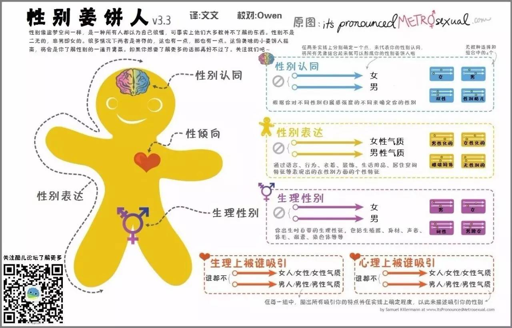
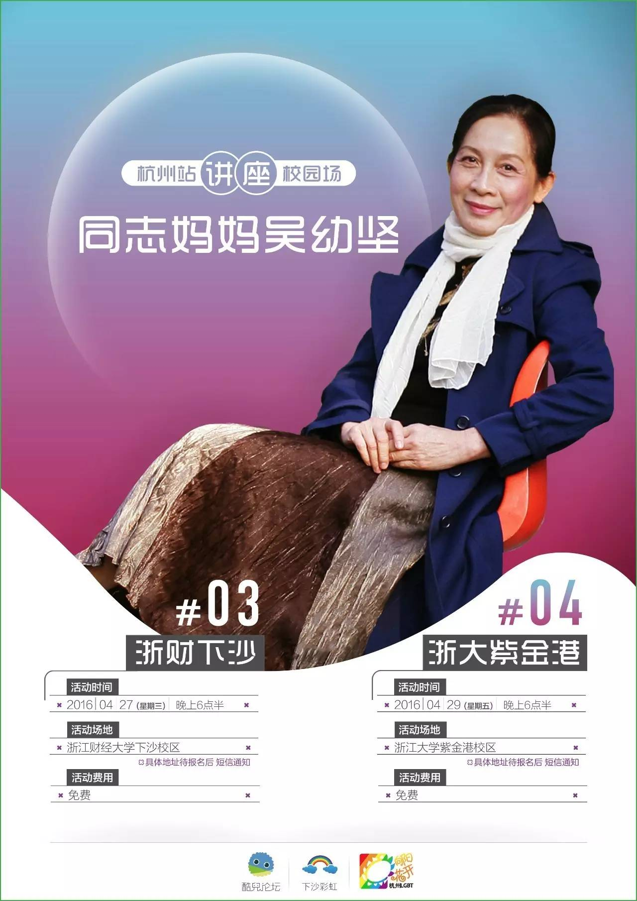

冒刺全书 | Naive！你对自己的性别一无所知！
在这次吴妈妈讲座的报名表中
大家一定注意到了特殊的一栏↓↓
经过讨论我们将“性别”改成了“性别认同”
（并且不设选项！）
毕竟要体现酷儿论坛宗旨中的“多元”
结果…
有的同学并不知道什么是性别认同…
在这一栏里大部分人填了男或女，有人填了“认同”（应该是表达支持认可之意？），有人填“双性”（可能是指自己的性取向？或是指自己同时有男性气质与女性气质？），有人填“顺性别”。
关于性别的认识，是性教育中重要的一部分，应该在中学、小学甚至学龄前就要教给孩子们（然而你知道我们在哪里）。但是没关系，现在就来和我们一起学习吧！（来自一个同样上了大学才略微了解基础性与性别知识的人）
所以…
到底什么是性别认同呢？！
在解答这个问题之前，首先要分清两个基本概念，一个是性别（sex），一个是社会性别（gender）。
传统上，性别的划分非常二元，只有男-女和其他，这种分法是基于生理性别的。对大部分动物来说，这样的分法已经足够了，因为生殖确实只需要女和男（雌雄？）（偏不把男放在前面哼）。
但是！
对于人类来说，性和性别的意义远不止生殖，它更是我们身份的一部分（好像太傲慢了？）。生理性别（sex）是由你的染色体决定的，而社会性别（gender）则取决于你自己的认同，这种认同就不止男、女两种选择了。我们每个人都有权利对自己的性别进行自由的选择，这就是我们这次让大家填写“性别认同”的内容——到底哪一种性别对你来说是最舒服的状态呢？
在确定自己的性别和性向之前先来了解一些SOGIE的知识吧~
性倾向（Sexual Orientation）
在性欲上和情感上持久地被某种性别的人所吸引。
性别认同（Gender Identity）
指的是个人在情感上和心理上认为自己属于某个性别。
性别表达（Gender Expression）
指的是个人通过衣着打扮、言行举止等外显的方式来表达自己的性别。
先来举个
著名不存在的社交网站Facebook上的56种性别，大部分指的都是性别认同和性倾向。这里就不一一列举了，bing一下你就知道（我偏不用某度）
再举个
前段时间备受关注的跨性别就业歧视案的主角——C先生，就是一位FtM跨性别者。他的生理性别是女，但他的自我认同为男性。如果要他来填这张报名表，在性别认同这一栏他可以有多种填法，可以填FtM跨性别（不标明FtM就写跨性别也可），或者直接写男，都是可以的。由于C先生性向为女，因此在性向一栏可填Straight（不好意思C先生这样随意把你拿来做例子）
稍微扯远一点
性别认同和性向是没有关系的。同样是FtM，有人可能是straight，有人可能是gay，也有人可能是bisexual。他们的性别认同都是跨性别男，但是性向却不同。
再再举两个
我们论坛的志愿者李葡萄同志，ta的性别认同是性别酷儿（Gender Queer）。很有名的圈姐（之前上过奇葩来了的超小米）↓，ta的性别认同是流性人（Gender Fluid）。
最最最后也是最重要的一点
酷儿理论认为，个体的生理性别、（社会）性别认同/表达、性取向（性倾向）都是自由、流动且可以自由组合的。无论是生理性别，还是社会性别，都不是简单的男/女二元对立，而是在男/女之间存在着一条性别光谱，个体可以自由选择自己在光谱上的位置而不受社会的偏见或歧视。简单地说，就是性别不是一成不变的，是有可能随着时间空间而变化的，你的性别你说了算~
其实精髓在最后！
下面附上一张性别姜饼人的图↓
帮助大家更好地认识自己的性别

既然现在对自己的性别有了更进一步的了解了
那么要不要考虑填张报名表试试呀
快点击“阅读原文”报名呀~
